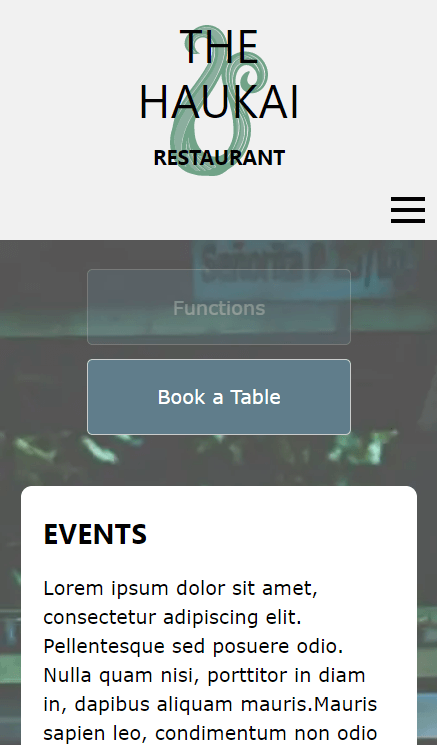
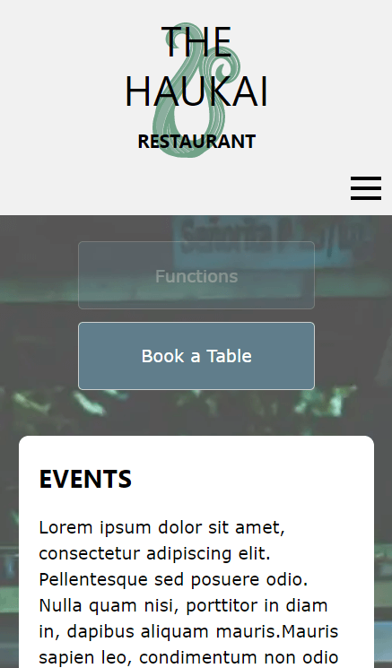

The Haukai Restaurant
This website was a project for my studies - we were given a brief and were tasked with creating a restaurant website using HTML and CSS, I also found use for some Javascript. There was plenty of opportunity to be creative with this project as I was responsible for the design from conception through to completion, I played around with fonts, images and information architecture to display the relevant content. Responsive design and performance on slower networks were accounted for when considering the user experience as many customers would likely access the website from their mobile devices. Google APIs were implemented for dynamic content such as maps and forms. After completing the website we were asked to redo the website styling using a web framework to simplify code maintenance, I chose to use W3.CSS.
EXPLORE THE WEBSITE -->


 

|